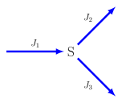

5.6. Branched Pathways#
In this chapter we will review branched systems.
Branching structures are one of the most common patterns in biochemical networks. Even a pathway such as glycolysis, often depicted as a straight chain in textbooks, is in fact a highly branched pathway.
At any given branch node, where a node is a molecular species, there will be conservation of mass. Given a node species, $s_i$, with $b$ branches entering the node and $d$ branches leaving, the net rate of change in concentration of $s_i$ is:
At steady state when $ds_i/dt = 0$, it must therefore be true that:
For example consider the simple branched pathway shown in Figure~ref{fig:simpleBranch}. \(J_1, J_2\) and \(J_3\) are the steady state fluxes. By the law of conservation of mass, the fluxes in each limb, at steady state will be governed by the relationship:

Simple branched pathway. This pathway has three different fluxes, \(J_1, J_2\), and \(J_3\), which at steady state are constrained by \(J_1 = J_2 + J_3\).
Let \(e_1\), \(e_2\), and \(e_3\) correspond to the concentration of enzyme at each step in the branched pathway. We can therefore define control coefficients, for example \(C^{J_1}_{e_1}\) which corresponds to the influence that Ep{1} has on the flux \(J_1\) or \(C^s_{e_2}\) which corresponds to the influence enzyme \(e_2\) has on the concentration of the intermediate S. In total there will be three concentration control coefficients \(C^s_{e_1}\), \(C^s_{e_2}\), and \(C^s_{e_3}\). For the flux control coefficients there will be one set of three flux control coefficients for each flux in the branched pathway. Given that there are three fluxes, it must mean there are nine flux control coefficients in total. Table~ref{tbl:CCBranchedSystem} lists all twelve control coefficients. For pathways with more complex branching the number of flux control coefficients increases further.
Set of all control coefficients for the simple branch pathway.
Each set of three flux control coefficients must obey the flux summation theorem:
Likewise there will also be three connectivity theorems that must be obeyed:
If we consider one set of matching pairs such as:
there are three unknowns, \(C^{J_1}_{e_1}, C^{J_1}_{e_3}\), and \(C^{J_1}_{e_3}\) but only two equations. To solve for \(C^{J_1}_{e_i}\), we need another equation.
Let the fraction of flux through \(J_2\) be given by \(\alpha = J_2/J_1\), and the fraction of flux through \(J_3\) be given by \(1 - \alpha = J_3/J_1\). Let us carry out the following thought experiment:
Increase the concentration of \(e_2\) by \(\delta e_2\). This will cause a decrease in S, an increase in \(J_1\) (relief of product inhibition) and a decrease in \(J_3\).
Restore the change in \(J_1\) by decreasing \(s_3\) such that S is restored to its pre-perturbation state. At the end of the thought experiment, \(\delta s = 0\).
Since we have not changed \(e_1\) and \(\delta s = 0\), it must be the case that \(\delta J_1 = 0\).
From this experiment we can write down the system and local equations. The system equation is given by:
Note that the system equation only has two terms because we did not change Ep{1}. The local equations are quite simple because \(\delta s = 0\) and as before we assume that \(\varepsilon^v_{e_i} = 1\)., therefore:
By substitution, the system equation can be written as:
Since $delta J_1 = 0 $, it must be the case that the net change in flux downstream of S must also be zero. That is, \(\delta v_2 + \delta v_3 = 0\), or \(\delta v_2 = -\delta v_3\). We can therefore eliminate the \(\delta v_3\) term:
Canceling terms we obtain:
We can substitute the absolute rates, \(v_2\) and \(v_3\) with the fractional rates, \(\alpha ` and `1-\alpha\) to give:
One final rearrangement yields:
This result is called the flux branch point theorem. We can derive similar theorems with respect to \(J_2\) and \(J_3\). In each case we carry out the same thought experiment such that the reference flux, \(J_2\) or \(J_3\), is unchanged. The two additional theorems are given below with respect to \(J_2\) and \(J_3\).
We can also derive, using the same thought experiment, branch point theorems with respect to the species concentration, S if we only perturb \(e_2\) and \(e_1\). This time the system equation is:
Substituting in the same local equations as before and noting that $delta v_2 = -delta v_3$, we obtain after some rearrangement:
This result is known as the {bfseries concentration branch point theorem} and it is very similar to the flux branch point theorem. There are also a set of variants that correspond to the concentration branch theorems for changes to \(e_1\) and $e_3$ and \(e_1\) and \(e_2\):
We can write out the theorems in matrix form using the theorems expressed in terms of \(J_2\); this includes one summation, one connectivity and one branch theorem.